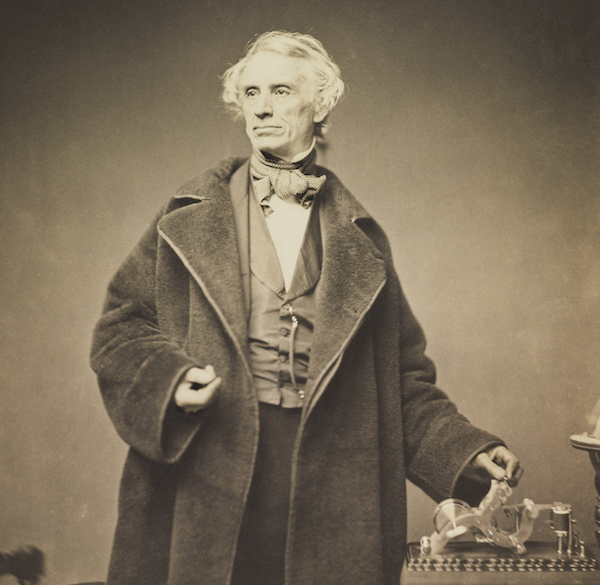
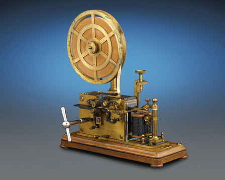

<!DOCTYPE html>
<html lang="en">
  <head>
    <meta charset="utf-8" />
    <meta name="viewport" content="width=device-width, initial-scale=1.0, maximum-scale=1.0, user-scalable=no" />

    <title></title>
    <link rel="stylesheet" href="dist/reveal.css" />
    <link rel="stylesheet" href="dist/theme/simple.css" id="theme" />
    <link rel="stylesheet" href="plugin/highlight/zenburn.css" />
	<link rel="stylesheet" href="css/layout.css" />
	<link rel="stylesheet" href="plugin/customcontrols/style.css">


    <script defer src="dist/fontawesome/all.min.js"></script>

	<script type="text/javascript">
		var forgetPop = true;
		function onPopState(event) {
			if(forgetPop){
				forgetPop = false;
			} else {
				parent.postMessage(event.target.location.href, "app://obsidian.md");
			}
        }
		window.onpopstate = onPopState;
		window.onmessage = event => {
			if(event.data == "reload"){
				window.document.location.reload();
			}
			forgetPop = true;
		}

		function fitElements(){
			const itemsToFit = document.getElementsByClassName('fitText');
			for (const item in itemsToFit) {
				if (Object.hasOwnProperty.call(itemsToFit, item)) {
					var element = itemsToFit[item];
					fitElement(element,1, 1000);
					element.classList.remove('fitText');
				}
			}
		}

		function fitElement(element, start, end){

			let size = (end + start) / 2;
			element.style.fontSize = `${size}px`;

			if(Math.abs(start - end) < 1){
				while(element.scrollHeight > element.offsetHeight){
					size--;
					element.style.fontSize = `${size}px`;
				}
				return;
			}

			if(element.scrollHeight > element.offsetHeight){
				fitElement(element, start, size);
			} else {
				fitElement(element, size, end);
			}		
		}


		document.onreadystatechange = () => {
			fitElements();
			if (document.readyState === 'complete') {
				if (window.location.href.indexOf("?export") != -1){
					parent.postMessage(event.target.location.href, "app://obsidian.md");
				}
				if (window.location.href.indexOf("print-pdf") != -1){
					let stateCheck = setInterval(() => {
						clearInterval(stateCheck);
						window.print();
					}, 250);
				}
			}
	};


        </script>
  </head>
  <body>
    <div class="reveal">
      <div class="slides"><section  data-markdown><script type="text/template"><!-- .slide: class="drop" -->
<div class="" style="position: absolute; left: 0px; top: 0px; height: 700px; width: 960px; min-height: 700px; display: flex; flex-direction: column; align-items: center; justify-content: center" absolute="true">




### -... . .-- .- .-. . / - .... . / .. -.. . .- ... / --- ..-. / ..-. . -... .-. ..- .- .-. -.--

[*listen*](morse.wav)

[https://shawngraham.github.io/hist1900/assets/slides/feb15](https://shawngraham.github.io/hist1900/assets/slides/feb15)
</div></script></section><section  data-markdown><script type="text/template"><!-- .slide: class="drop" -->
<div class="" style="position: absolute; left: 0px; top: 0px; height: 700px; width: 960px; min-height: 700px; display: flex; flex-direction: column; align-items: center; justify-content: center" absolute="true">


</div>

<aside class="notes"><ul>
<li>supervening social necessity: railroad safety - started to diminish nearly instantly; other electrical signalling systems for controlling sidings, switches etc emerge at same time as telegraphy;</li>
<li>existing things like semaphore and inertia around them continue to work against telegraphy</li>
<li>accelerators/inhibitors or winston&#39;s &#39;suppression of radical potential&#39; all at play</li>
<li>including patent battles over who had &#39;invented&#39; electrical telegraphy. Morse loses in England. In France, the state claims control over telegraphy. </li>
<li>in US, US Post Office, exercising its constitutional right over communications, runs the morse line at first (also, that $30 000 prize, right?). But american politicians could only see it as a cost, couldn&#39;t imagine its uses, and so <em>denationalised</em> it, letting Morse &amp; his backers have it back, 1845</li>
<li>thus US does not maintain control over communications, as in other countries. This has ramifications for the future.</li>
</ul>
</aside></script></section><section  data-markdown><script type="text/template"><!-- .slide: class="drop" -->
<div class="" style="position: absolute; left: 0px; top: 0px; height: 700px; width: 960px; min-height: 700px; display: flex; flex-direction: column; align-items: center; justify-content: center" absolute="true">

The Stock Market


</div>

<aside class="notes"><ul>
<li>even though it doesn&#39;t really pan out for railroad safety, idea of carriage of things other than safety messages takes off, and the new technology finds immediate repurposing for purposes of stock markets and newspapers</li>
<li>Cordell: &#39;Nothing but a newspaper can drop the same thought into a thousand minds at the same moment,” Alexis de Tocqueville writes, describing circulation as a technology—like the rail and telegraph—compressing space and time, linking individuals around the nation by “talk[ing] to you briefly every day of the common weal.”&#39;</li>
</ul>
</aside></script></section><section  data-markdown><script type="text/template"><!-- .slide: class="drop" -->
<div class="" style="position: absolute; left: 0px; top: 0px; height: 700px; width: 960px; min-height: 700px; display: flex; flex-direction: column; align-items: center; justify-content: center" absolute="true">


[Viral Texts](https://viraltexts.org)
</div>

<aside class="notes"><p>network graph showing newspapers with high degrees of similarity in how they use/reuse the same texts. Colours indicate similar patterns of interconnectivity. 19th c newspapers weren&#39;t &#39;editors&#39; concerned with authenticity, but more like curating an experience, using scissors and paste and telegraphs, trying to get the most interesting stories to put in front of their readers. Cordell et al&#39;s viral texts project tries to map different pieces of text from the period - from poems to fiction to actual reporting - and track how these pieces themselves moved around, how they &#39;went viral&#39; in a 19th century setting. The telegraph puts a premium on novelty and being the first with the news.</p>
</aside></script></section><section  data-markdown><script type="text/template"><!-- .slide: class="drop" -->
<div class="" style="position: absolute; left: 0px; top: 0px; height: 700px; width: 960px; min-height: 700px; display: flex; flex-direction: column; align-items: center; justify-content: center" absolute="true">

Multiple services emerge; Multiple lawsuits
- Henry O'Reilly in the western US; secures right to exploit Morse patents; Morse later regrets this
- Cooke and Wheatstone have american patents prior to Morse
- Alexander Bain, 'Chemical telegraph' (1843, similar in concept to Davy's)
- Competing services, technologies stringing lines side-by-side (as between Boston and Washington, New York and Buffalo)
- Eventually Morse is triumphant in the courts.
</div>

<aside class="notes"><ul>
<li>in the US at least, the gov&#39;t did not involve itself in sorting out the patent disputes and lawsuits; lots of companies set up shop and start wiring things together. One of these, Western Union, begins to emerge and absorb up other companies</li>
</ul>
<p>-it&#39;s worth quoting Winston in full: &#39;What had initially been adopted to avoid wasting taxpayers&#39; dollars became a self-denying ordinance - the government would not engage in profitable communications enterprises. In time, this would help underpin the received opinion that government enterprises in telecommunications cannot, by their very nature, be profitable. (This then becomes self-fulfilling: if such enterprises are profitable, then they should be, and are, privatised).</p>
<ul>
<li>in europe the telegraph becomes subsitute for the gov&#39;t controlled semaphore, and then becomes an extension of postal (state) services)</li>
</ul>
</aside></script></section><section  data-markdown><script type="text/template"><!-- .slide: class="drop" -->
<div class="" style="position: absolute; left: 0px; top: 0px; height: 700px; width: 960px; min-height: 700px; display: flex; flex-direction: column; align-items: center; justify-content: center" absolute="true">


</div>

<aside class="notes"><p>Other kinds of electrico-mechanical devices emerging</p>
<ul>
<li>Abbé Caselli invents a device in 1862 to transmit daguerreotypes of sender&#39;s handwriting (sets up shop with support of Napoleon III)</li>
<li>Elisha Gray (subsequent of telephone-competitor-to-Bell fame) makes a device featuring styluses at either end of the line to <em>write and copy</em> someone&#39;s document</li>
</ul>
<p>Why did the fax machine fail in the mid 19th century? Per winston, no supervening social necessity.</p>
</aside></script></section><section  data-markdown><script type="text/template"><!-- .slide: class="drop" -->
<div class="" style="position: absolute; left: 0px; top: 0px; height: 700px; width: 960px; min-height: 700px; display: flex; flex-direction: column; align-items: center; justify-content: center" absolute="true">

## Extending the Wires

- all those court battles; also vandalism, cutting of lines
	- by 1851, Morse triumphant! consolidation of lines in US
	- Only three companies still standing
	- by the end of 1860s only Western Union still standing 
	- \> 150 companies absorbed
	- 37380 miles of cable
	- 2250 telegraph offices
</div>

<aside class="notes"><ul>
<li>telegraph offices were nodes and distribution points. Nodes in the sense that they would store messages/forward them on in the correct direction when the line was clear; distribution in that if the recipient lived in proximity, they&#39;d send the message out by hand</li>
</ul>
</aside></script></section><section  data-markdown><script type="text/template"><!-- .slide: class="drop" -->
<div class="" style="position: absolute; left: 0px; top: 0px; height: 700px; width: 960px; min-height: 700px; display: flex; flex-direction: column; align-items: center; justify-content: center" absolute="true">

>" We are in great haste to construct a magnetic telegraph from Maine to TExas; but Maine and Texas, it may be, have nothing to communicate" - Thoreau
</div>

<aside class="notes"><p>Morse and others celebrated all this, especially the emergence of a single company running the show but remember, in Europe and elsewhere there was only ever one telegraph system from the outset, government planned, following the existing semaphore lines. A good point to ask yourself - and to go out looking to find - what was the situation like in Canada?</p>
</aside></script></section><section  data-markdown><script type="text/template"><!-- .slide: class="drop" -->
<div class="" style="position: absolute; left: 0px; top: 0px; height: 700px; width: 960px; min-height: 700px; display: flex; flex-direction: column; align-items: center; justify-content: center" absolute="true">

## International Telegraphy

- 1842, Morse puts an experimental cable across New York Harbour
- 1849 William O'Shaughnessy Brooke, in British-controlled India, puts an iron rod beneath/across a river, some 4200 feet & transmits a message
- 1852 Frederic Gisborne lays cable between New Brunswick and PEI
- 1854 the New York, Nefoundland and London Telegraph Company forms; by 1856 has a cable across the Gulf of St Lawrence
- 1858 the Atlantic was crossed
</div></script></section><section  data-markdown><script type="text/template"><!-- .slide: class="drop" -->
<div class="" style="position: absolute; left: 0px; top: 0px; height: 700px; width: 960px; min-height: 700px; display: flex; flex-direction: column; align-items: center; justify-content: center" absolute="true">


</div></script></section><section  data-markdown><script type="text/template"><!-- .slide: class="drop" -->
<div class="" style="position: absolute; left: 0px; top: 0px; height: 700px; width: 960px; min-height: 700px; display: flex; flex-direction: column; align-items: center; justify-content: center" absolute="true">


</div>

<aside class="notes"><p>depicted - excess cable from the first crossing of the atlantic turned into a souvenir by Tiffany&#39;s, NY
how do you transmit across a body of water, let alone an ocean?</p>
<ul>
<li>two schools of thought. Morse, Faraday though wider the wire, the more electricity you&#39;d need, so it should be as thin as possible</li>
<li>William Thomson (who becomes Lord Kelvin) says, no, the resistence to flow is inversely proportional to the square of the cable&#39;s length. ie, you need a big thick wire. obviously more expensive, heavier, too.</li>
<li>Gutta Percha Company manufactured the cable &amp; its insulation, went with Morse/Faraday idea. Weight 107 pounds per mile (other kind was 392 pounds per mile)</li>
<li>250 tons of gutta-percha used</li>
<li>Gutta Percha is a kind of latex rubber, from Gutta Percha trees. Core wrapped in layers of it; then covered in hemp and tar; then wrapped in iron. 5/8&quot; diameter when finished</li>
</ul>
</aside></script></section><section  data-markdown><script type="text/template"><!-- .slide: class="drop" -->
<div class="" style="position: absolute; left: 0px; top: 0px; height: 700px; width: 960px; min-height: 700px; display: flex; flex-direction: column; align-items: center; justify-content: center" absolute="true">


</div>

<aside class="notes"><ul>
<li>Frederic Gisbourne had been trying to lay cable between Newfoundland and Nova Scotia. Meets Cyrus Field, wealthy New Yorker who agrees to bankroll things.</li>
<li>Original idea was to just string from St. John&#39;s to the rest of north america, use fast boats to move the news (shortest crossing of the atlantic). Field thinks bigger - Ireland! (which was already connected to England)</li>
<li>by 1856 St John&#39;s to New York works; Field is working both sides of the atlantic for funding; mix of private &amp; gov&#39;t money secured</li>
<li>took 3 weeks to load the cable; too much for one ship.</li>
<li>1857 - USS Niagra and HMS Agamemnon set out from Valentia, Ireland, w/ 1300 miles of cable. Niagra unrolls first (so in a way is tethered to Ireland); they can also send messages back to the station on land, so can keep in touch AND test that cable is working. Idea is that at midpoint on ocean, they&#39;d splice the cable with that on Agamemnon to continue rest of the way.</li>
<li>by August, cable stops working, then machinery on Niagra snaps the cable. 300 miles lost. Season abandoned.</li>
<li>1858 - plan is to start in the middle; splice the two coils together, sail in opposite directions (while sending messages back and forth to make sure everything works). should be faster. storms and technical difficulties kibosh this attempt.</li>
<li>1858 later that summer - try the same plan again. august 2, Agamemnon reaches Ireland; august 5, Niagara reaches newfoundland. connected up; telegrams sent; americans immediately suspect the congraulation from Queen Victoria to be a hoax.</li>
<li>nyc celebrated with parades, fireworks</li>
</ul>
</aside></script></section><section  data-markdown><script type="text/template"><!-- .slide: class="drop" -->
<div class="" style="position: absolute; left: 0px; top: 0px; height: 700px; width: 960px; min-height: 700px; display: flex; flex-direction: column; align-items: center; justify-content: center" absolute="true">


</div>

<aside class="notes"><p>The cable failed within weeks. Investigation ultimately decided that chief engineer Edwin Whitehouse (Atlantic side) was to blame, by having pumped 2000 volts through the line from time to time to try to improve the signal. Investigation in the 20th century of the cable demonstrated serious manufacturing defects, implying the cable would&#39;ve failed no matter what, but in having someone to blame investors could fire him and try again - <em>the tech is fine!</em> just need better people</p>
<ul>
<li>Kelvin comes up with a galvanometer in 1858 after the first failed cable that uses light and mirror to detect very faint pulses in the current and to make &#39;em visible. Thus transatlantic telegraphy w/ lower energy requirements</li>
</ul>
</aside></script></section><section  data-markdown><script type="text/template"><!-- .slide: class="drop" -->
<div class="" style="position: absolute; left: 0px; top: 0px; height: 700px; width: 960px; min-height: 700px; display: flex; flex-direction: column; align-items: center; justify-content: center" absolute="true">


</div>

<aside class="notes"><p>This is the Great Eastern, designed and built by Isambard Kingdom Brunel. Victorians always went big. Was meant to carry 4000 passengers Britain - Australia. Damaged by explosion on maiden voyage. Used as passenger liner transatlantic; converted to cable-layer in 1866. Only ship afloat big enough to run one continous coil</p>
</aside></script></section><section  data-markdown><script type="text/template"><!-- .slide: class="drop" -->
<div class="" style="position: absolute; left: 0px; top: 0px; height: 700px; width: 960px; min-height: 700px; display: flex; flex-direction: column; align-items: center; justify-content: center" absolute="true">

> "We are eager to tunnel under the Atlantic and bring the old world some weeks nearer to the new; but perchance the first news that will leak through into the broad flapping American ear will be that Princess Adelaide has the whooping cough" - Thoreau, again.
</div>

<aside class="notes"><p>the annihlation of space created by the transatlantic cables creates its own supervening social necessity. By the 1920s there were 21 transatlantic cables
-by 1865 Karachi in India was in instant comms with London; Australia by 1871; South America by 1874. <strong>imagine the mental shift this would make</strong></p>
</aside></script></section><section  data-markdown><script type="text/template"><!-- .slide: class="drop" -->
<div class="" style="position: absolute; left: 0px; top: 0px; height: 700px; width: 960px; min-height: 700px; display: flex; flex-direction: column; align-items: center; justify-content: center" absolute="true">

Individual states begin to realize that control of international communications *matters*. 

Britain especially advantaged: control of gutta pecha, colonies around the world to control start/end of long distant lines

1875 President Grant explains why a French cable company was denied permission to land a cable in US: they gotta let us use their cable in return
</div>

<aside class="notes"><p>this principle underpins international telecommunications to this day; the inverse is the right to cut everyone off</p>
<ul>
<li>despite obvious interest in gov&#39;t control, US had codified its earlier reluctance to limit their involvement in comms as support for building in exchange for right to use. This contrasts with the &#39;post office&#39; model used in other countries. We&#39;ll see this again in 20th century</li>
</ul>
</aside></script></section><section  data-markdown><script type="text/template"><!-- .slide: class="drop" -->
<div class="" style="position: absolute; left: 0px; top: 0px; height: 700px; width: 960px; min-height: 700px; display: flex; flex-direction: column; align-items: center; justify-content: center" absolute="true">

Implications for colonialism
- takes about 100 days to sail from London to Hong Kong
- Marx & Engels 1848: 'The need of a constantly expanding market for its products chases the bourgeoisie over the whole surface of the globe. It must nestle everywhere, settle everywhere, establish connections everywhere.'
</div></script></section><section  data-markdown><script type="text/template"><!-- .slide: class="drop" -->
<div class="" style="position: absolute; left: 0px; top: 0px; height: 700px; width: 960px; min-height: 700px; display: flex; flex-direction: column; align-items: center; justify-content: center" absolute="true">

- if distance is collapsed
- if messages can be transmitted thousands of miles within seconds/minutes
	- then what is to stop a state from expanding its reach?

(you can play with the concept of space/time in the context of the Roman world with [ORBIS](https://orbis.stanford.edu/))
</div>

<aside class="notes"><p>supervening social necessity: the Indian Mutiny of 1857 panic&#39;d british ruling class, creating huge impetus for linking telegraphs in India (where there was already 4555 miles of telegraph wire) with Europe</p>
</aside></script></section><section  data-markdown><script type="text/template"><!-- .slide: class="drop" -->
<div class="" style="position: absolute; left: 0px; top: 0px; height: 700px; width: 960px; min-height: 700px; display: flex; flex-direction: column; align-items: center; justify-content: center" absolute="true">


Resinous tree-gum that can be crafted in a plastic/rubbery way
</div></script></section><section  data-markdown><script type="text/template"><!-- .slide: class="drop" -->
<div class="" style="position: absolute; left: 0px; top: 0px; height: 700px; width: 960px; min-height: 700px; display: flex; flex-direction: column; align-items: center; justify-content: center" absolute="true">


Without Gutta-Percha, there is no trans-atlantic cable. There is no long distance telegraphy.
</div>

<aside class="notes"><ul>
<li>GP grows mostly in south-east asia, Malyasia. In the lands taken by the Dutch, British, and French.</li>
<li>largest gutta-percha works in the world were in London, in the East-End, Thomas Hancock company. Largest cable making company nearby, set up by Charles Silver - 1852, originally for making waterproof clothing; turns to cable in 1867.</li>
<li>first known to Europeans in 1656, but not much use; in 1832, apparently, Scottish physician William Montgomerie (in Calcutta) learns how to work it after being shown by a Malay labourer - it becomes pliable when heated up. supervening social need: consumer products! used in all the same places we use plastics today.</li>
<li>first used as an insulator for an electrical telegraphy in 1847, german engineer Werner von Siemens (yes, that Siemens).</li>
</ul>
</aside></script></section><section  data-markdown><script type="text/template"><!-- .slide: class="drop" -->
<div class="" style="position: absolute; left: 0px; top: 0px; height: 700px; width: 960px; min-height: 700px; display: flex; flex-direction: column; align-items: center; justify-content: center" absolute="true">

By early 20th century, there were 200 000 miles of undersea cable; GP about 27 000 tons; that means 88 million trees destroyed.
</div>

<aside class="notes"><p>Harvesting Gutta-Percha</p>
<ul>
<li><p>find a stand of <em>Isonandra</em> trees</p>
</li>
<li><p>chop them down (because of the way they grow, some height above the ground)</p>
</li>
<li><p>chop off the leaves to prevent the sap from being drawn into them (osmosis)</p>
</li>
<li><p>carve channels in the trunk for the latex to leak out</p>
</li>
<li><p>coagulated mass then has to be washed and cleaned</p>
</li>
<li><p>unscrupulous merchants add &#39;filler&#39; to the mass to fluff it out</p>
</li>
<li><p>felled trees left to rot on the jungle floor, most latex still in them</p>
</li>
<li><p>all of victorian telegraphy reliant on a cottage industry, a damaging industry; 60&#39; tree only provided on average 312 g of latex</p>
</li>
<li><p>in 1875, 1 000 000 kg of gutta-percha was imported into Britain</p>
</li>
<li><p>at same time was going extinct in its former range</p>
</li>
<li><p>by 1900 telegraph companies realized uh oh; planned lines being cancelled for lack of gutta-percha </p>
</li>
<li><p>rough calculation - by early 20th century, there were 200 000 miles of undersea cable; GP about 27 000 tons; that means 88 million trees destroyed.</p>
</li>
</ul>
</aside></script></section><section  data-markdown><script type="text/template"><!-- .slide: class="drop" -->
<div class="" style="position: absolute; left: 0px; top: 0px; height: 700px; width: 960px; min-height: 700px; display: flex; flex-direction: column; align-items: center; justify-content: center" absolute="true">


Tully, John. “A Victorian Ecological Disaster: Imperialism, the Telegraph, and Gutta-Percha.” _Journal of World History_ 20, no. 4 (2009): 559–79. http://www.jstor.org/stable/40542850.
</div></script></section><section  data-markdown><script type="text/template"><!-- .slide: class="drop" -->
<div class="" style="position: absolute; left: 0px; top: 0px; height: 700px; width: 960px; min-height: 700px; display: flex; flex-direction: column; align-items: center; justify-content: center" absolute="true">

Read Tom Standage's short chapter(s) on the *social* impacts of this first Internet Age over reading week.

Ask yourself, whenever you come across a new tech in this story:
- what are the competencies on which it rests?
- what are the social necessities that would support its adoption?
- what are the accelerating and braking forces that move it forward/hold it back?
- what are the social/political/economic/environmental consequences?
</div></script></section><section  data-markdown><script type="text/template"><!-- .slide: class="drop" -->
<div class="" style="position: absolute; left: 0px; top: 0px; height: 700px; width: 960px; min-height: 700px; display: flex; flex-direction: column; align-items: center; justify-content: center" absolute="true">

And just as that's all getting started, some idiot figures out how to send voice over the telegraph wires.

This next slide is kinda gory, contains human remains.
</div></script></section><section  data-markdown><script type="text/template"><!-- .slide: class="drop" -->
<div class="" style="position: absolute; left: 0px; top: 0px; height: 700px; width: 960px; min-height: 700px; display: flex; flex-direction: column; align-items: center; justify-content: center" absolute="true">


Tom Everett [Writing sound with a human ear: reconstructing Bell and Blake’s 1874 ear phonautograph](https://pdfs.semanticscholar.org/5dc1/d9f362fec1208fb9b555c589cd0a9daeb62d.pdf)
</div></script></section><section  data-markdown><script type="text/template"><!-- .slide: class="drop" -->
<div class="" style="position: absolute; left: 0px; top: 0px; height: 700px; width: 960px; min-height: 700px; display: flex; flex-direction: column; align-items: center; justify-content: center" absolute="true">

Task: 

Use Everett's article as a way of framing keyword or keyword phrase searches for more information about the phonautograph and its relationship to telephony. 

Then, using the framework of 'competences', 'social necessity', 'brakes/accelerators' and what you read in Standage, make some 'idea notes' about why telephony emerges, exists in parallel to, and ultimately overtakes telegraphy
</div></script></section></div>
    </div>

    <script src="dist/reveal.js"></script>

    <script src="plugin/markdown/markdown.js"></script>
    <script src="plugin/highlight/highlight.js"></script>
    <script src="plugin/zoom/zoom.js"></script>
    <script src="plugin/notes/notes.js"></script>
    <script src="plugin/math/math.js"></script>
	<script src="plugin/mermaid/mermaid.js"></script>
	<script src="plugin/chart/chart.min.js"></script>
	<script src="plugin/chart/plugin.js"></script>
	<script src="plugin/customcontrols/plugin.js"></script>

    <script>
      function extend() {
        var target = {};
        for (var i = 0; i < arguments.length; i++) {
          var source = arguments[i];
          for (var key in source) {
            if (source.hasOwnProperty(key)) {
              target[key] = source[key];
            }
          }
        }
        return target;
      }

	  function isLight(color) {
		let hex = color.replace('#', '');

		// convert #fff => #ffffff
		if(hex.length == 3){
			hex = `${hex[0]}${hex[0]}${hex[1]}${hex[1]}${hex[2]}${hex[2]}`;
		}

		const c_r = parseInt(hex.substr(0, 2), 16);
		const c_g = parseInt(hex.substr(2, 2), 16);
		const c_b = parseInt(hex.substr(4, 2), 16);
		const brightness = ((c_r * 299) + (c_g * 587) + (c_b * 114)) / 1000;
		return brightness > 155;
	}

	var bgColor = getComputedStyle(document.documentElement).getPropertyValue('--r-background-color').trim();
	var isLight = isLight(bgColor);

	if(isLight){
		document.body.classList.add('has-light-background');
	} else {
		document.body.classList.add('has-dark-background');
	}

      // default options to init reveal.js
      var defaultOptions = {
        controls: true,
        progress: true,
        history: true,
        center: true,
        transition: 'default', // none/fade/slide/convex/concave/zoom
        plugins: [
          RevealMarkdown,
          RevealHighlight,
          RevealZoom,
          RevealNotes,
          RevealMath.MathJax3,
		  RevealMermaid,
		  RevealChart,
		  RevealCustomControls,
        ],


    	allottedTime: 120 * 1000,

		mathjax3: {
			mathjax: 'plugin/math/mathjax/tex-mml-chtml.js',
		},
		markdown: {
		  gfm: true,
		  mangle: true,
		  pedantic: false,
		  smartLists: false,
		  smartypants: false,
		},

		mermaid: {
			theme: isLight ? 'default' : 'dark',
		},

		customcontrols: {
			controls: [
			]
		},
      };

      // options from URL query string
      var queryOptions = Reveal().getQueryHash() || {};

      var options = extend(defaultOptions, {"width":960,"height":700,"margin":0.04,"controls":true,"progress":true,"slideNumber":false,"transition":"fade","transitionSpeed":"default"}, queryOptions);
    </script>

    <script>
      Reveal.initialize(options);
    </script>
  </body>

  <!-- created with Advanced Slides -->
</html>
